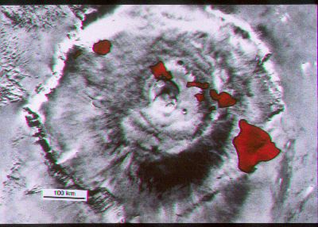
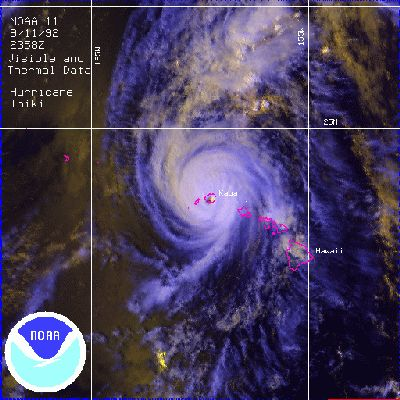

For the original picture of this superposition see the 1989
textbook
edition. Below is a picture of Olympus Mons compared to the
Hawaiian
Islands and one of Hurricane Iniki hitting Hawaii about a decade
after
Iwa.

